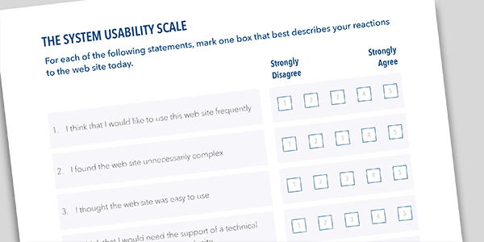

BCAS

Project Overview
- Organization: RBC
- Role: Design Research Intern
Background
At RBC, I worked as a Design Research intern on the Finance My Business journey which focused on credit products for business banking. With the supervision of a senior design researcher, I led and managed evaluative research on a web application for self-serve business line of credit.
The goal of this research was, “See if users can complete a line of credit increase with full confidence and understanding.”
Methods
- Remote user testing with 8 participants
When I came into this project, the product team was looking to evaluate the second iteration of their prototype. The prototype we were testing was considered ready to deploy. I helped to shape the research question and talked with the product team to better understand what they were looking to get out of the findings. From these discussions, I worked with a recruitment agency to find participants who fit our needs and led moderated interviews on Zoom where users walked through an interactive prototype and provided feedback. Interviews ended with a system usability survey where a score was assigned to the usability of the system based on responses provided.

Source: Userfocus
Key Findings
Overall, users were able to complete a line of credit increase with some confidence and understanding. However, there were some key concepts that users had trouble understanding due to confusing wording and imagery. I worked with the product and design team to improve the UI elements and content based on the feedback received from user testing.
Conclusion
During my time at RBC, I was fortunate to be on a team where I wasn’t just an intern - I was a member of the team. I was presented with opportunities to lead a project with a guiding hand when necessary and my work was taken seriously. I was also able to work beyond design research, implementing research recommendations into UI design and content design where necessary.
Thank you for reading!